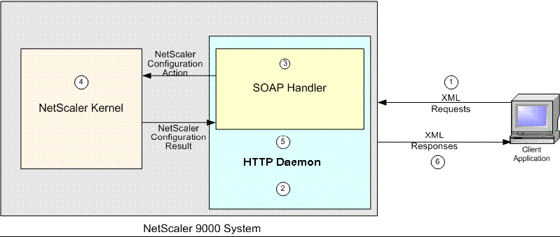

| Architecture |
| The NetScaler API architecture is designed to allow NSConfig client requests to be routed through HTTP daemon, running on the target NetScaler system, to a SOAP handler that translates the SOAP request into a call to the (internal) NetScaler kernel configuration API. Figure below illustrates the NetScaler API Architecture. |
|  |
The following steps explain the NetScaler API Architecture:
|